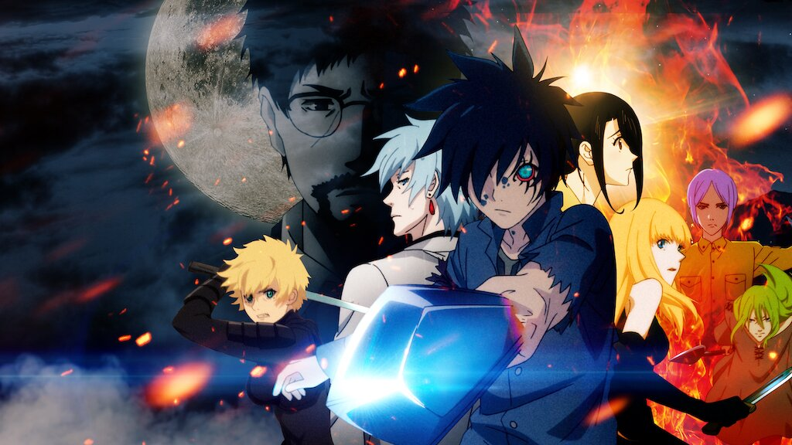

Drama
1
3
Black Clover
Shounen
Magia
Fantasia
Aventura
Ação
82%
2015
12+
170 ep's
Num mundo onde magia é tudo, Asta e Yuno são abandonados em uma igreja no mesmo dia. Enquanto Yuno possui poderes mágicos excepcionais, Asta é a única pessoa do mundo todo desprovida desse dom. Dois opostos que nutrem uma rivalidade amigável, Yuno e Asta estão prontos para encarar os mais difíceis desafios para conquistar seu sonho em comum: tornar-se o Rei dos Feiticeiros. Desistir não é opção!
The Daily Life of the Immortal King
Slice of Life
Demônios
Fantasia
Aventura
Comédia
80%
2020
14+
29 ep's
Como um gênio do cultivo que alcança um novo domínio a cada dois anos desde que ele tinha um ano, Wang Ling é uma existência quase invencível, com proezas muito além de seu controle. Mas agora que ele tem dezesseis anos, ele enfrenta sua maior batalha até agora – o ensino médio. Com um desafio após o outro, seus planos para uma vida discreta no ensino médio parecem cada vez mais distantes…

Puraore!
Pride of Orange
Romance
Vida Escolar
Drama
Shoju
Sci-fi
86%
2021
16+
4 ep's
Quando a estudante de 16 anos Takamiya Naho recebe uma misteriosa carta, supostamente enviada por ela mesma de 11 anos no futuro, sua vida vira de cabeça pra baixo.

Record of Ragnarok
Seinen
Magia
Fantasia
Sci-fi
Ação
83%
2021
16+
12 ep's
Antes de serem erradicados pelos deuses, os humanos têm uma última chance de provar que merecem viver. Que comecem as batalhas do Ragnarok!

Castlevania
Sombrio
Terror
Fantasia
Magia
Ação
79%
2017
16+
32 ep's
Um caçador de vampiros luta para salvar uma cidade sitiada por um exército de criaturas controladas pelo próprio Drácula. Inspirado no clássico videogame.

B: The Beginning
Suspense
Policial
Sobrenatural
Ação
Sci-fi
85%
2018
16+
18 ep's
O genial investigador Keith Flick regressa à polícia bem quando o serial killer "B" entra em ação. O misterioso jovem Koku pode ser um aliado. Ou será ele um alvo?

the promised neverland
Suspense
Pós-apocalíptico
Mistério
Shounen
Sci-fi
87%
2019
16+
12 ep's
A mulher a quem chamam de ""mãe"" não é uma mãe de verdade. As crianças que convivem naquele lugar não são irmãos de verdade. Na Casa Grace Field, moram apenas crianças órfãs. Um lar sem igual, onde 38 crianças sem parentesco algum levam vidas felizes ao lado de suas mães. Até que sua rotina pacífica chega a um fim abrupto...
Violet Evergarden
Triste
Drama
Guerra
Fantasia
Sci-fi
81%
2018
10+
14 ep's
Ao escrever cartas por quem não pode, Violet Evergarden descobre a história de seu país devastado pela guerra - e a dureza do próprio coração.

Angel Beats!
Vida Escolar
Drama
Ação
Fantasia
Sci-fi
78%
2010
14+
13 ep's
Nesta escola, que é uma passagem obrigatória para o pós-vida, um jovem é pego em meio a uma batalha pelos direitos daqueles que vivem no purgatório.

Charlotte
Vida Escolar
Drama
Ação
Fantasia
Super-poder
77%
2015
14+
13 ep's
Enquanto na superfície Yuu Otosaka parece ser apenas mais um adolescente charmoso e inteligente, ele tem um segredo - ele tem a capacidade de entrar na mente das pessoas e controlar totalmente seu corpo por cinco segundos de cada vez. Quando o enigmático Nao Tomori pega Yuu usando seu poder, ela o força e sua irmã Ayumi a se transferirem para a Academia Hoshinoumi, uma escola para estudantes com habilidades sobrenaturais. O conselho estudantil da escola, liderado por Nao, tem a tarefa de localizar secretamente adolescentes que abusam de seus poderes. Yuu é forçado a ingressar no conselho estudantil e, juntos, enfrentam desafios formidáveis.
Ano Hana
Vida Escolar
Drama
Teen
Fantasia
Sci-fi
81%
2011
12+
11 ep's
Um jovem atormentado pelo espírito de uma velha amiga convoca os outros membros de seu clube de infância para ajudar a realizar o desejo final da garota.
Shigatsu Wa Kimi no Uso
Vida Escolar
Drama
Shounen
Fantasia
Musical
86%
2014
12+
22 ep's
Baseado no premiado mangá Shigatsu wa Kimi no Uso, de Naoshi Arakawa, a série é sobre um pianista prodígio que se torna incapaz de tocar após o trauma de perder sua amada mãe e professora. Com isso arrancado dele, a vida de Kousei Arima se torna monótona e sem brilho. Um dia, Kousei é apresentado a uma violinista chamada Kaori Miyazono. Livre, poderosa e apaixonada, a performance audaciosa de Kaori traz de volta a Kousei a luz da vida. Reunidos pela música, poderão as sinceras notas do violino da garota fazer com que o rapaz volte a tocar piano?
Showa Genroku
Rakugo Shinju
Envolvente
Drama
Josei
Fantasia
Cultura
75%
2016
13+
12 ep's
Ao ser liberto da prisão, um homem procura o famoso escritor cômico Yakumo por ter se apaixonado por sua versão da história "Ceifador". Yakumo aceita o ex-convicto como seu aprendiz, apelidando-lhe de Yotaro. À medida que Yotaro se acostuma com sua nova vida, ele conhece Konatsu, uma garota criada por Yakumo que também deseja tornar-se uma artista, mas que não pode por ser mulher.